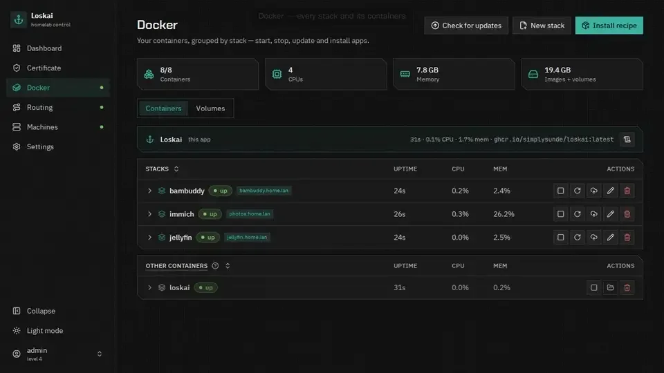
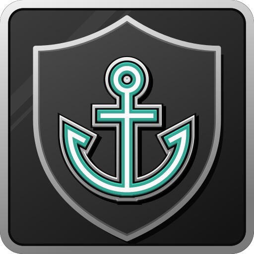
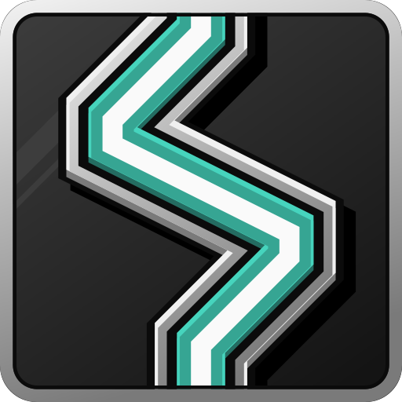

Loskai
A control panel for your homelab, in one container: an HTTPS name for every service, your Docker stacks, apps from recipes, and your machines over SSH.
Open on GitHub ↗


A control panel for your homelab, in one container: an HTTPS name for every service, your Docker stacks, apps from recipes, and your machines over SSH.
Open on GitHub ↗